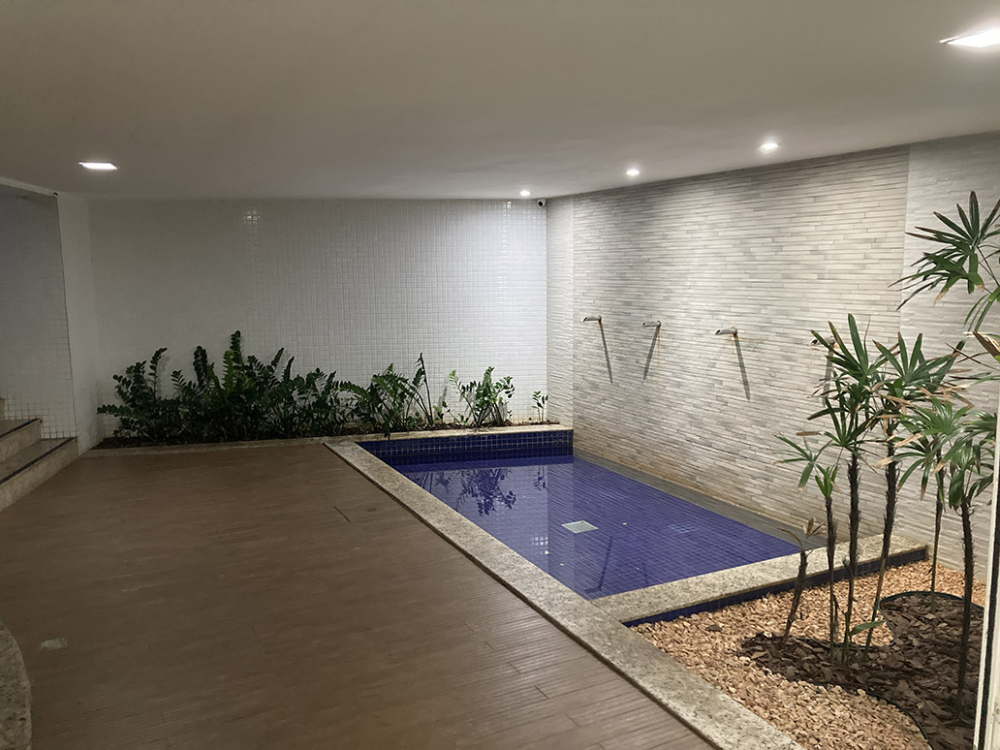

Parque / área da academia
Estudo de área infantil/lazer próxima à academia, com atenção a segurança, circulação e manutenção.

Proposta de requalificação do espaço infantil próximo à academia.
Clique aqui para ver a imagem maior

Parque / área da academia: transformar um espaço morto em permanência qualificada
Esse espaço possui uma característica muito importante: ele funciona como transição entre a saída do fundo do prédio e o acesso à praia. Em outras palavras, é uma área que já faz parte naturalmente do fluxo do condomínio. O problema é que hoje ela transmite uma sensação de espaço morto, com linguagem estética ultrapassada e pouca clareza de uso.
A boa notícia é que o potencial já existe. A área é ampla, ventilada, próxima ao lazer e pode ser reinterpretada com uma obra relativamente simples, especialmente se o condomínio conseguir reaproveitar parte da estrutura já existente.
É importante que o leitor observe atentamente o piso atual. Existe a possibilidade — embora isso precise ser confirmado tecnicamente — de aproveitar parte do piso existente na nova composição. Isso pode reduzir custo, obra e desperdício, além de manter uma certa continuidade material no ambiente.
A proposta também considera diminuir um pouco a largura da passagem atual, sem comprometer em absolutamente nada o fluxo de pedestres. O corredor existente é excessivamente generoso para a necessidade real de circulação e parte desse espaço pode ser convertida em permanência qualificada.
O objetivo é transformar a área em um ambiente mais vivo, agradável e funcional para crianças e famílias, sem criar um parque excessivamente espalhafatoso ou desconectado da estética do condomínio.
Com materiais corretos, iluminação adequada, vegetação, pintura bem escolhida e brinquedos integrados de maneira inteligente, o espaço pode deixar de parecer apenas um “caminho para a praia” e passar a funcionar como uma pequena praça de convivência do Costa España.
Mais importante do que adicionar muitos elementos é construir uma atmosfera agradável. A proposta não busca excesso decorativo, e sim criar uma área leve, funcional e coerente com a valorização patrimonial do prédio.